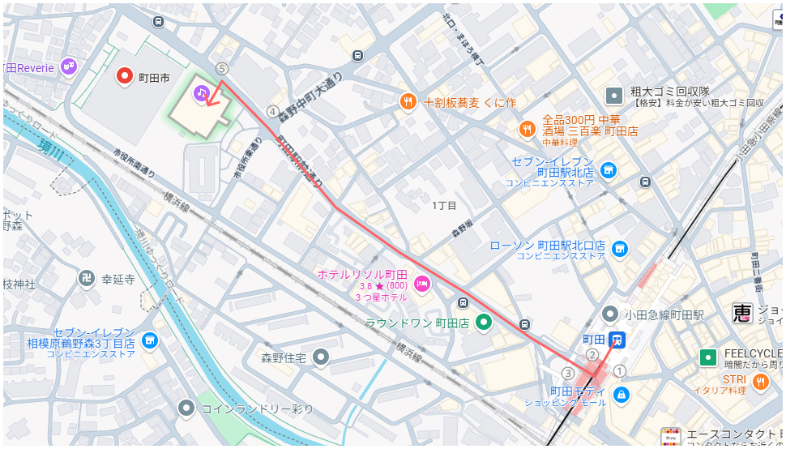

所在地

TEL 03-3756-4400/ FAX 03-3756-4800
小田急線町田駅「西口」から徒歩7分
JR横浜線町田駅「中央改札口（北口）」から徒歩10分
電車でお越しの方
- ■ 小田急線町田駅「西口」から徒歩７分
-
 ①｢西口｣改札を出て右前方へ進む
②階段を下りて右へ進む
③｢町田駅前通り｣を直進する
④｢町田市役所｣交差点の横断歩道を渡る
⑤広場を通過したら到着です - ■ 小田急線町田駅「西口」から徒歩７分
-
①｢中央改札(北口)｣を出て右へ進む
②｢マルイ｣に沿って左に曲がる
③｢小田急線町田駅｣方面へは向かわずにそのまま直進
④｢西友｣脇の階段を下りる
⑤｢町田駅前通り｣を直進する
⑥｢町田市役所｣交差点の横断歩道を渡る
⑦広場を通過したら到着です
バスでお越しの方
- ■ 神奈中バス｢町田市役所市民ホール前｣から徒歩１分
-
乗り場 系統 行先 ３ 町32 小山田桜台 ３ 町33 下山崎 ５ 町24 山崎団地 １０ 町06 町田バスセンター １１ 町41 藤の台団地 １４ 町26 野津田車庫 上記は｢町田バスセンター｣からの案内です
上記以外にも｢町田市役所市民ホール前｣の停車するバスはございます。
詳細は 神奈川中央交通株式会社ホームページ をご覧ください。
車でお越しの方
- ■ タイムズ町田市役所※提携はしていません
- 駐車料金：終日６０分３５０円／２４時間最大料金８００円
駐車台数：１８７台
高さ制限：２．１ｍ
重量制限：２．５ｔ

自転車･バイクでお越しの方
※但し、駐車可能台数には限りがございます